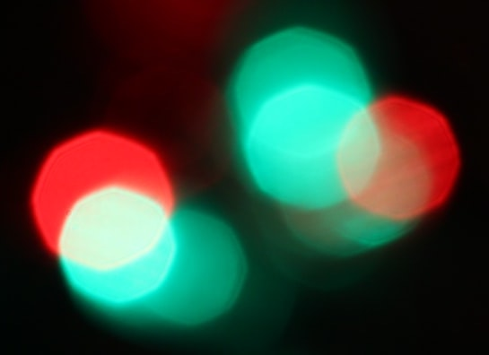

<a href="google.com">Click here</a><br/> <a href="google.com">more</a><br/> This is a <a href= "javascript:void(0)"> link </a> that uses javascript in their href location. <br> This is another <a href= "javascript:void(0)"> link </a> that uses javascript in their href location. <br> <a style="border: 2px solid black;"href="google.com">Click</a><br/> <a title="Read more about failed elephant evacuation" href="http://example.com/WORLD/africa/kenya.elephants.ap/index.html" > Evacuation Crumbles Under Jumbo load </a><br/> <!-- todo: quick fix will add alt attribute to img; it is being triggered because clickable link is in the form of an image with empty alt --> <a href="google.com"></a>